Последняя версия: 0.4.11
Привет! Этот гайд создан для того, чтобы позволить любому человеку развернуть ноду Concordium без особых сложностей.
Требования:
- Сервер со следующими характеристиками:
- Минимум 4 гигабайта оперативной памяти
- 30 гигабайт SSD
0. Покупка сервера
Для начала нужно определиться с местом, где мы будем брать наш сервер. Я рекомендую сервис Vultr.com, поэтому в качестве примера мы будем
рассматривать именно его.
Регистрация
Переходим на сайт, кликаем Sign Up

Заполняем форму, кликаем Create Account

В личном кабинете кликаем на плюсик:

Нам нужен сервер с минимум 4 гигабайтами оперативной памяти, ищем, находим:

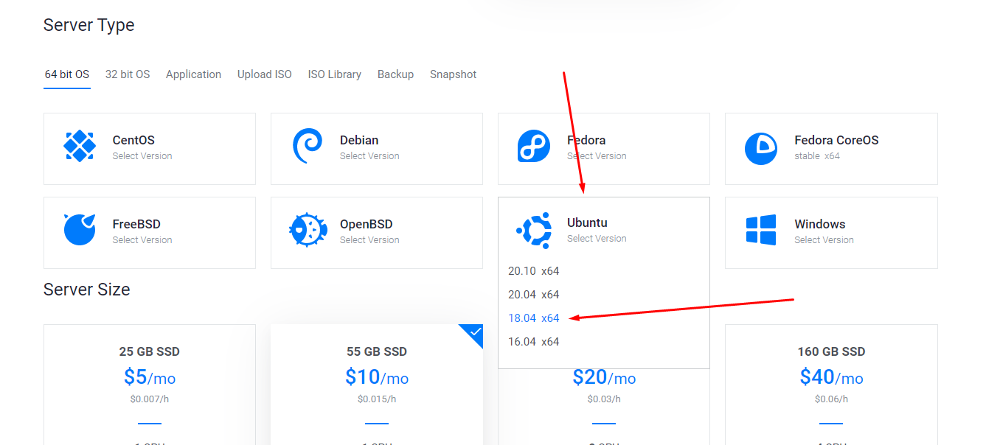

Арендуем

Кликаем на Products слева в верхнем углу, переходим в панель с нашими серверами, ждем пока сервер перейдет в статус Running, кликаем на сервер

Теперь нам нужны данные для подключения к серверу: его IP, логин и пароль. Их мы можем найти в местах, указанных на скриншоте:
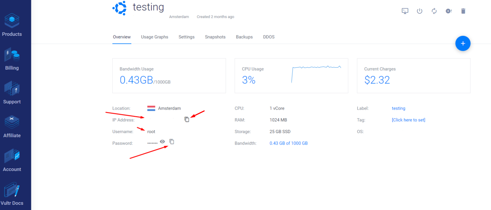
Нам нужно подключиться к нашему серверу, для этого воспользуемся программой Termius, скачиваем, устанавливаем, запускаем.
Необходимо создать новое подключение, для этого проделываем действия как на скриншоте

В указанные поля нужно внести данные которые мы получали из панели сервера в Vultr, а именно: IP, логин и пароль. В поле Label пишем что угодно - это название нашего севрера в списке серверов в Termius.

Два раза кликаем по добавленному серверу, в открывшемся диалоговом окне нажимаем "yes".
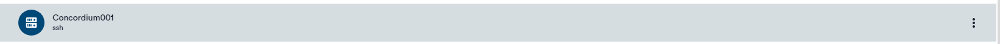
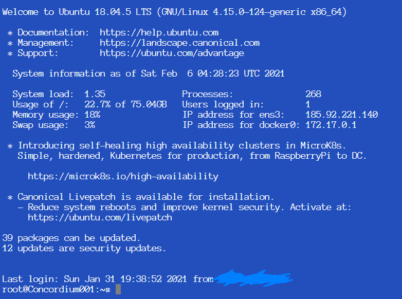
Поздравляю, вы зашли! Можно продолжать.
Регистрация
Переходим на сайт, кликаем Sign Up
Заполняем форму, кликаем Create Account
В личном кабинете кликаем на плюсик:
Нам нужен сервер с минимум 4 гигабайтами оперативной памяти, ищем, находим:
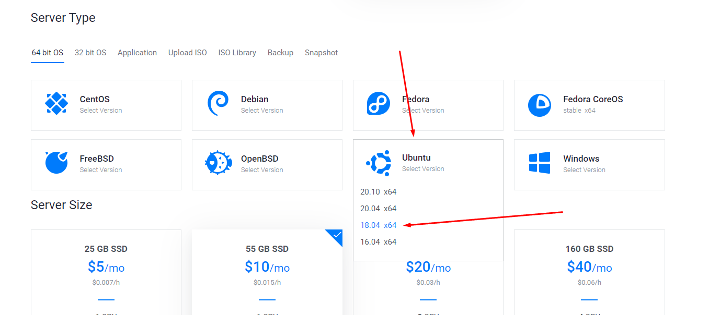
Арендуем
Кликаем на Products слева в верхнем углу, переходим в панель с нашими серверами, ждем пока сервер перейдет в статус Running, кликаем на сервер
Теперь нам нужны данные для подключения к серверу: его IP, логин и пароль. Их мы можем найти в местах, указанных на скриншоте:
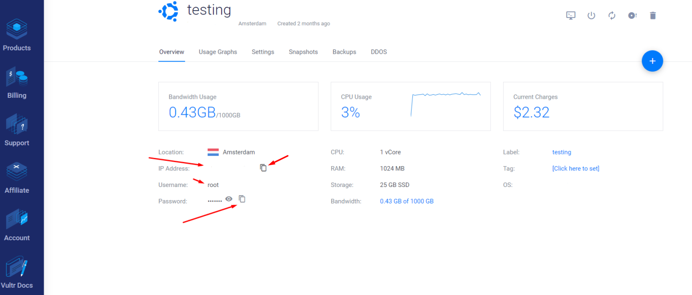
Нам нужно подключиться к нашему серверу, для этого воспользуемся программой Termius, скачиваем, устанавливаем, запускаем.
Необходимо создать новое подключение, для этого проделываем действия как на скриншоте
В указанные поля нужно внести данные которые мы получали из панели сервера в Vultr, а именно: IP, логин и пароль. В поле Label пишем что угодно - это название нашего севрера в списке серверов в Termius.
Два раза кликаем по добавленному серверу, в открывшемся диалоговом окне нажимаем "yes".
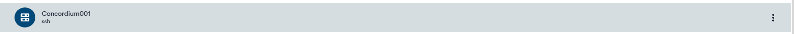
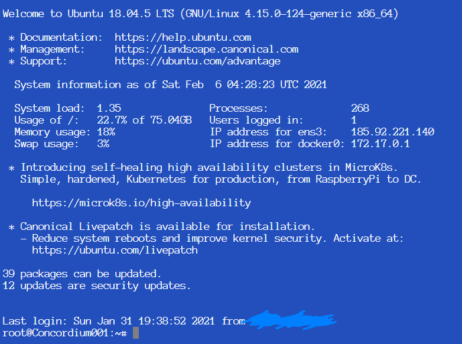
Поздравляю, вы зашли! Можно продолжать.
1. Подготовка сервера
1.1. Подготовка окружения
Сначала нам нужно подготовить окружение к работе, для этого мы все будем делать в
отдельном скрине и запишем переменные, которые нам пригодятся позднее:
screen -S concordium
echo 'export PATH=$PATH:/home/concordium/concordium-software' >> $HOME/.bashrc
echo 'export IP=$(curl ifconfig.me)' >> $HOME/.bashrc
source ~/.bashrc
screen -S concordium
echo 'export PATH=$PATH:/home/concordium/concordium-software' >> $HOME/.bashrc
echo 'export IP=$(curl ifconfig.me)' >> $HOME/.bashrc
source ~/.bashrc
1.2. Установка необходимых пакетов
Далее нам нужно установить необходимые пакеты, для этого выполняем следующие
команды:
apt update
apt install apt-transport-https ca-certificates curl gnupg-agent software-properties-common wget screen -y
apt update
apt install apt-transport-https ca-certificates curl gnupg-agent software-properties-common wget screen -y
Теперь нам нужно установить Docker, так как его наличие требуется для запуска ноды
Concordium. Для этого выполняем следующие команды:
curl -fsSL https://download.docker.com/linux/ubuntu/gpg | sudo apt-key add -
sudo apt-key fingerprint 0EBFCD88
add-apt-repository "deb [arch=amd64] https://download.docker.com/linux/ubuntu $(lsb_release -cs) stable"
apt update
apt install docker-ce docker-ce-cli containerd.io -y
Проверим, все ли установилось корректно:
systemctl status docker
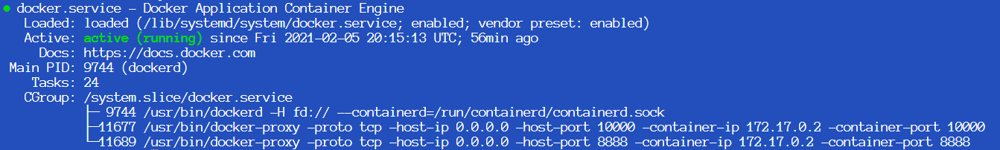
Если да - вы увидите примерно то же самое, что и на скриншоте. Если нет - повторите шаги выше.
curl -fsSL https://download.docker.com/linux/ubuntu/gpg | sudo apt-key add -
sudo apt-key fingerprint 0EBFCD88
add-apt-repository "deb [arch=amd64] https://download.docker.com/linux/ubuntu $(lsb_release -cs) stable"
apt update
apt install docker-ce docker-ce-cli containerd.io -y
Проверим, все ли установилось корректно:
systemctl status docker
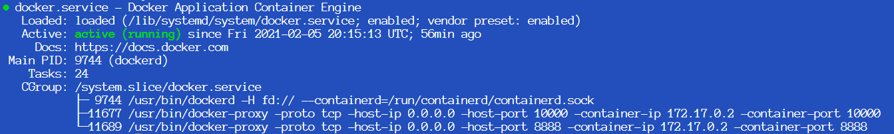
Если да - вы увидите примерно то же самое, что и на скриншоте. Если нет - повторите шаги выше.
1.3. Создание пользователя
Теперь нам нужно создать пользователя, из под которого будет работать нода - работать из
под рута нода Concordium не будет. Для этого выполним следующие шаги:
useradd -m concordium --shell /bin/bash
echo "concordium:onehundredsecurepwd*100" | chpasswd
usermod -aG sudo concordium
groupadd docker
usermod -aG docker concordium
useradd -m concordium --shell /bin/bash
echo "concordium:onehundredsecurepwd*100" | chpasswd
Вы можете выбрать какое вам удобно имя пользователя и пароль, предложенное здесь -
примеры. Имя пользователя concordium используется для удобства, если вам нужно
другое - вы можете установить другое значение, но тогда учитывайте это при
выполнении дальнейших шагов.
Теперь присвоим пользователю необходимые группы:usermod -aG sudo concordium
groupadd docker
usermod -aG docker concordium
Теперь нам нужно подготовить окружение пользователя и залогиниться под созданным
аккаунтом, поэтому выполним следующие команды:
cd /home
chown concordium: concordium
su --login concordium
cd /home
chown concordium: concordium
su --login concordium
1.4. Настройка пользователя
Сменив пользователя нам нужно заново добавить переменные, для этого выполняем:
echo 'export PATH=$PATH:/home/concordium/concordium-software' >> $HOME/.bashrc
echo 'export IP=$(curl ifconfig.me)' >> $HOME/.bashrc
source ~/.bashrc
echo 'export PATH=$PATH:/home/concordium/concordium-software' >> $HOME/.bashrc
echo 'export IP=$(curl ifconfig.me)' >> $HOME/.bashrc
source ~/.bashrc
2. Установка ноды
2.1. Скачивание ноды
Теперь нам необходимо скачать ПО ноды Concordium, для этого выполняем команды:
wget -O concordium.tar.gz https://client-distribution-testnet.concordium.com/concordium-software-linux_0.4.8-0.tar.gz
tar -xf concordium.tar.gz
cd concordium-software
wget -O concordium.tar.gz https://client-distribution-testnet.concordium.com/concordium-software-linux_0.4.8-0.tar.gz
tar -xf concordium.tar.gz
cd concordium-software
2.2. Запуск ноды
Запускаем ноду:
./concordium-node
Если все в порядке, то вы увидите следующее:
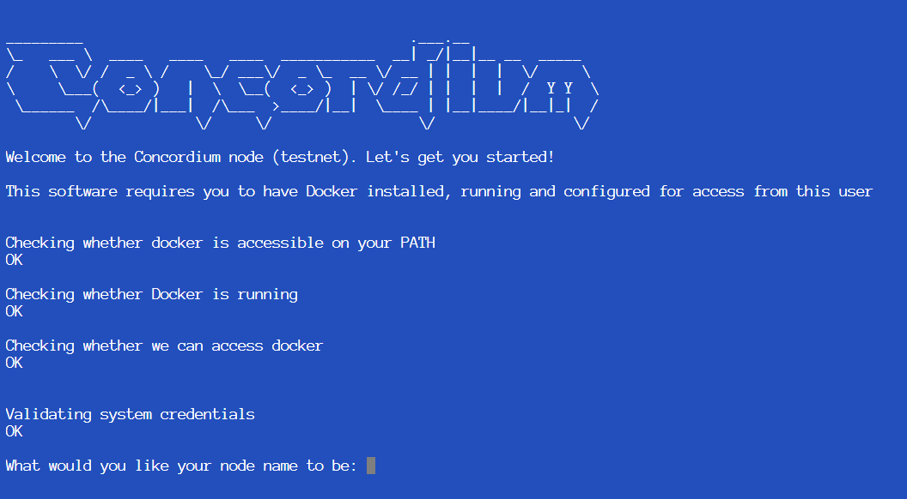
Здесь вам нужно ввести имя вашей ноды, вводите любое - это нужно вам для поиска вашей ноды в эксплорере.
После этого у вас должно появиться такое окно, а дальше в этом окне будет работать ваша нода Concordium:

Поздравляю! Вы установили ноду Concordium.
./concordium-node
Если все в порядке, то вы увидите следующее:
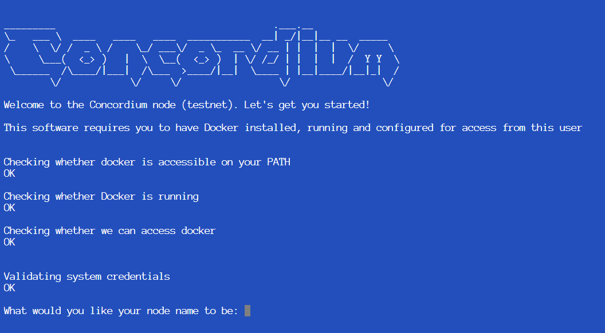
Здесь вам нужно ввести имя вашей ноды, вводите любое - это нужно вам для поиска вашей ноды в эксплорере.
После этого у вас должно появиться такое окно, а дальше в этом окне будет работать ваша нода Concordium:
Поздравляю! Вы установили ноду Concordium.
3. Работа с приложением Concordium ID
3.1. Установка приложения
3.1.1. Установка на Android
Для установки необходим телефон с версией Android 8 и выше.
- Скачиваем Concordium ID APK
- Вы можете увидеть предупреждения о скачивании .apk файла, если такое произойдет - нажимайте OK.
-
После запуска .apk файла вы можете увидеть сообщение о том, что у вас в настройках
запрещена установка приложений из неизвестных источников.
Для того, чтобы разрешить установку перейдите в настройки и подтвердите установку приложения, а затем вернитесь назад. - Теперь вас спросят хотите ли вы установить приложение, нажмите Install.
3.1.2. Установка на iOS
Для установки необходим iPhone с версией iOS 13 и выше, а так же приложение TestFlight.
- Устанавливаем TestFlight через AppStore
- Присоединяемся к программе тестирования (этот шаг рекомендуется делать непосредственно с телефона)
- Открываем приложение TestFlight и устанавливаем Concordium ID.
3.2. Запуск приложения
Запускаем приложение, нажимаем Yes, lets go! и устанавливаем пароль:

 Затем нажимаем I want to create my initial account, затем Okay, got it!
Затем нажимаем I want to create my initial account, затем Okay, got it!
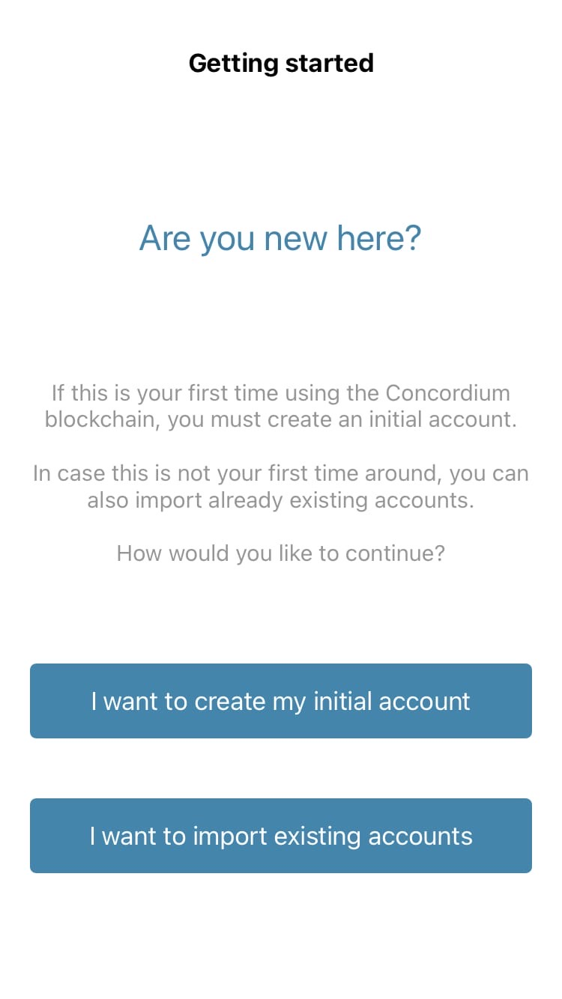
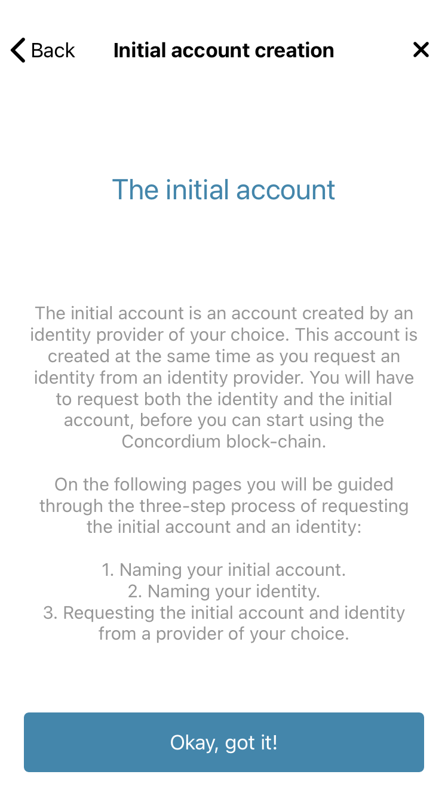
3.3. Создание аккаунта
Нам необходимо указать:

 Пройти KYC на данный момент можно как используя реальные документы, так и без них. Для того,
чтобы пройти KYC без документов выберите Notabene Development.
Пройти KYC на данный момент можно как используя реальные документы, так и без них. Для того,
чтобы пройти KYC без документов выберите Notabene Development.
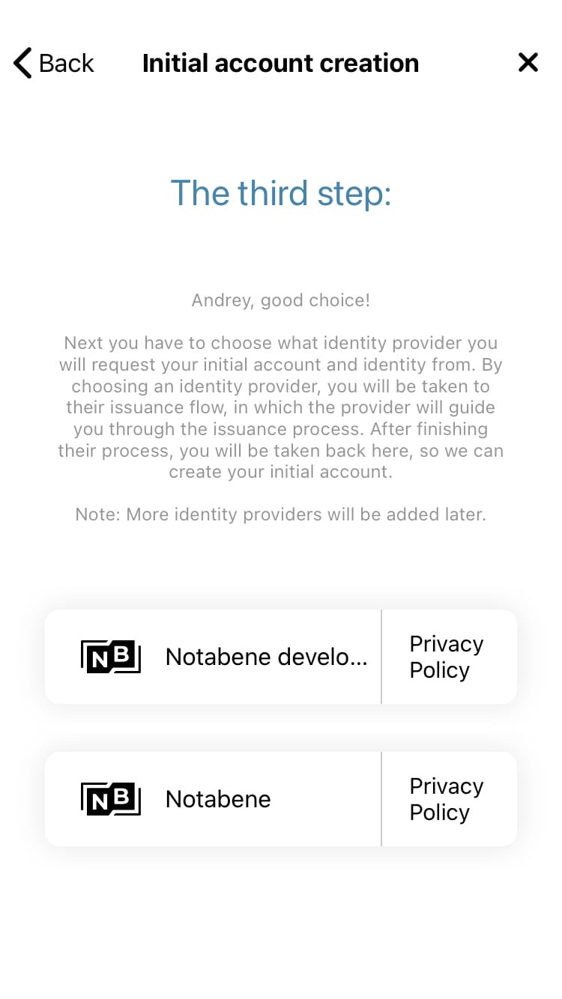
Менять данные не нужно, просто скроллите вниз и нажимаете Continue.
После того, как вы пройдете KYC, вы увидите свой аккаунт и баланс на нем.

Теперь вам необходимо подождать некоторое время (пока идет подтверждение KYC), после чего вам будет доступна возможность запроса баланса.
- Название аккаунта (далее в качестве названия аккаунта будет использоваться ConcordiumBegginerGuide)
- Ваше имя
- KYC-провайдера
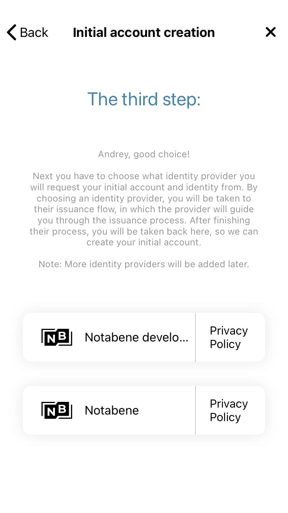
Менять данные не нужно, просто скроллите вниз и нажимаете Continue.
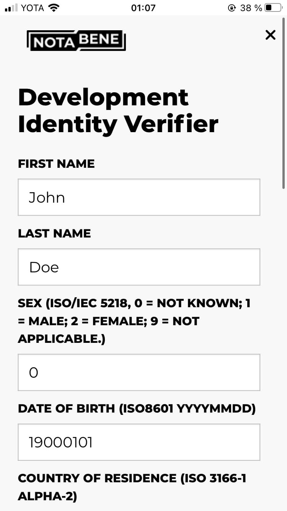
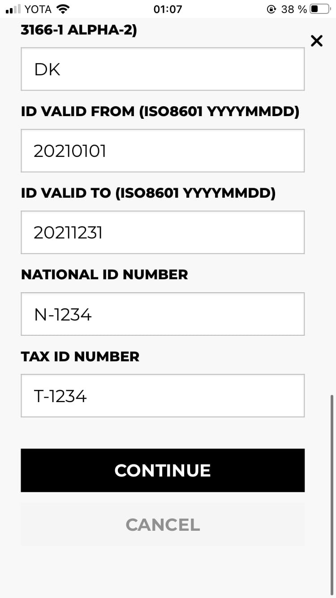
Теперь вам необходимо подождать некоторое время (пока идет подтверждение KYC), после чего вам будет доступна возможность запроса баланса.
3.4. Запрос баланса
Кликните по надписи "Balance" и вы увидите окно, в котором сможете запросить 100 GTU (вам
придет 2000 GTU, значение 100 осталось с прошлого тестнета), запросите, ожидайте
поступления.
 После поступления токенов на баланс можете переходить к следующему шагу.
После поступления токенов на баланс можете переходить к следующему шагу.
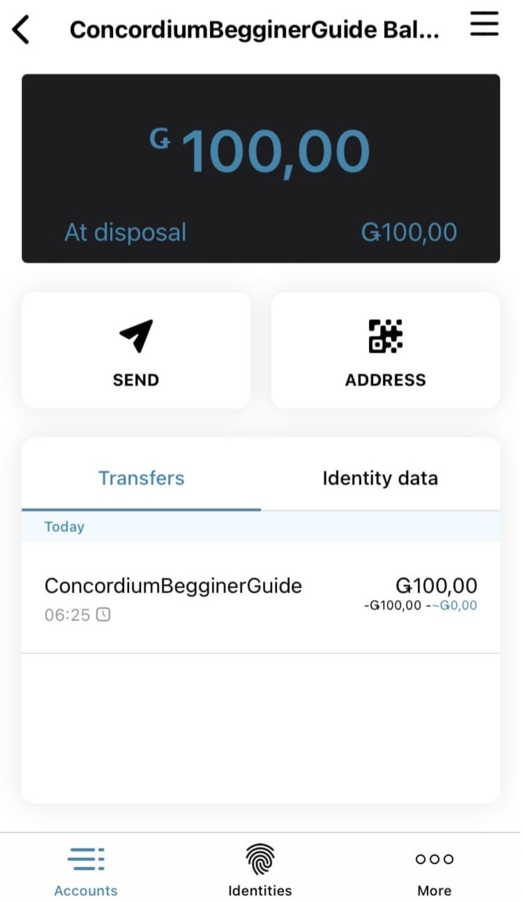
3.5. Экспорт аккаунта
Процедура экспорта аккаунта необходима для того, чтобы мы могли полноценно пользоваться
нодой. Для того, чтоб экспортировать аккаунт выполните следующие действия:
Подключившись к серверу по FTP сохраните ваши ключи в удобном для вас месте (в дальнейшем мы будем использовать путь /home/concordium/jsons/export.concordiumwallet как путь к вашему файлу ключа, рекомендуется сохранить их в этом же месте).
- В приложении нажмите More в правом нижнем углу
- Нажмите Export
- Нажмите Continue
- Введите пароль, который в дальнейшем будете использовать при работе с аккаунтом на ноде
- Проскролльте вниз, выберите Save to Files, сохраните
Подключившись к серверу по FTP сохраните ваши ключи в удобном для вас месте (в дальнейшем мы будем использовать путь /home/concordium/jsons/export.concordiumwallet как путь к вашему файлу ключа, рекомендуется сохранить их в этом же месте).
4. Добавление аккаунта
На этом шаге подразумевается, что у вас уже экспортирован аккаунт и он находится по пути
/home/concordium/jsons/ с названием export.concordiumwallet (т.е. полный путь к файлу
выглядит как /home/concordium/jsons/export.concordiumwallet)
4.1. Импорт аккаунта
Импортируем наш аккаунт командой:
concordium-client config account import /home/concordium/jsons/export.concordiumwallet --name ConcordiumBegginerGuide --grpc-ip $IP
concordium-client config account import /home/concordium/jsons/export.concordiumwallet --name ConcordiumBegginerGuide --grpc-ip $IP
4.2. Создание бейкера
Теперь нам нужно сделать ключи для бейкера, для этого выполняем команды:
mkdir /home/concordium/keys
/home/concordium/keys
concordium-client baker generate-keys /home/concordium/keys/key.json
Теперь нам необходимо подождать пока нода будет синхронизироваться, это займет время.
Для проверки статуса ноды необходимо найти ее в эксплорере (в нашем случае она называется ConcordiumBegginerGuide) и сравнить значение Height of best block с другой, уже синронизированной нодой (возьмите, например, ноду с аптаймом больше суток).
mkdir /home/concordium/keys
/home/concordium/keys
concordium-client baker generate-keys /home/concordium/keys/key.json
Теперь нам необходимо подождать пока нода будет синхронизироваться, это займет время.
Для проверки статуса ноды необходимо найти ее в эксплорере (в нашем случае она называется ConcordiumBegginerGuide) и сравнить значение Height of best block с другой, уже синронизированной нодой (возьмите, например, ноду с аптаймом больше суток).
4.3. Добавление бейкера
Когда нода синхронизируется приступаем к следующему шагу - добавляем бейкера:
concordium-client baker add /home/concordium/keys/key.json --sender ConcordiumBegginerGuide --stake 1000 --out ~/.local/share/concordium/baker-credentials.json --no-restake --grpc-ip $IP
В результате вы должны увидеть примерно следующее:
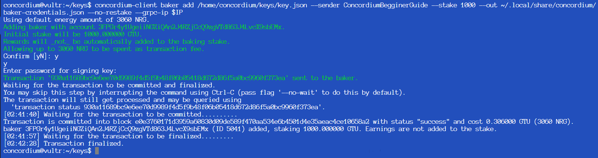
concordium-client raw GetNodeInfo --grpc-ip $IP
Значение Baker committee member должно быть True.
concordium-client baker add /home/concordium/keys/key.json --sender ConcordiumBegginerGuide --stake 1000 --out ~/.local/share/concordium/baker-credentials.json --no-restake --grpc-ip $IP
В результате вы должны увидеть примерно следующее:
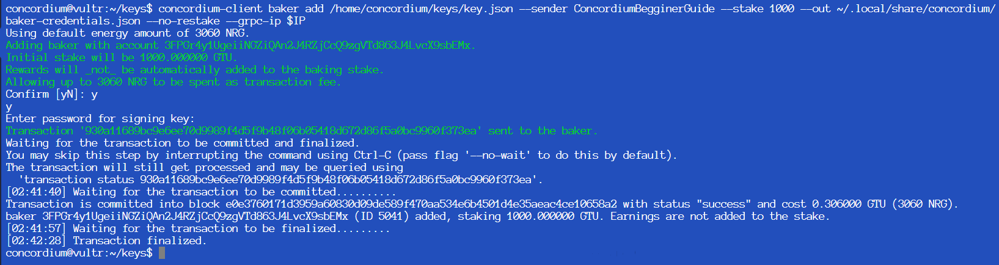
В случае появления надписи "Error: Account does not exist on the chain." необходимо дождаться момента, пока синхронизируется нода.
Для появления Baker ID в эксплорере необходимо подождать 2 эпохи (2 часа) и
перезапустить ноду, после этого появится Baker ID.
Проверяем, являемся ли мы бейкером. Для этого необходимо ввести команду:concordium-client raw GetNodeInfo --grpc-ip $IP
Значение Baker committee member должно быть True.
Если значение Baker committee member False - перезапустите ноду или подождите.
Если в результате этого Baker committee member все еще False - проверьте наличие baker-credentials.json по адресу /home/concordium/.local/share/concordium, для этого нужно выполнить команду:
cat /home/concordium/.local/share/concordium/baker-credentials.json
Примерный вывод должен быть такой:
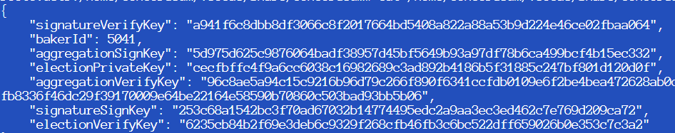
Если у вас выдает ошибку, то повторите заново шаги выше (пункт 4.3)
Поздравляю, вы запустили ноду Concordium!
Если в результате этого Baker committee member все еще False - проверьте наличие baker-credentials.json по адресу /home/concordium/.local/share/concordium, для этого нужно выполнить команду:
cat /home/concordium/.local/share/concordium/baker-credentials.json
Примерный вывод должен быть такой:
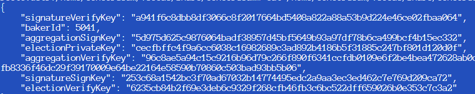
Если у вас выдает ошибку, то повторите заново шаги выше (пункт 4.3)
Полезная информация
Ссылки
Concordium explorer - dashboard.testnet.concordium.comTestnet Challengs - Testnet4-Challenges
Команды:
Обновить стейк:concordium-client baker update-stake --sender ConcordiumBegginerGuide --stake 1800 --grpc-ip $IP
Остановить ноду:
concordium-node-stop
Запустить ноду:
screen -rd concordium
concordium-node
Посмотреть список бейкеров и их шанс на добычу блока:
concordium-client consensus show-parameters --include-bakers --grpc-ip $IP
Получить логи:
su --login concordium
wget https://client-distribution-testnet.concordium.com/retrieve_minified_logs-linux-v1
chmod +x retrieve_minified_logs-linux-v1
./retrieve_minified_logs-linux-v1